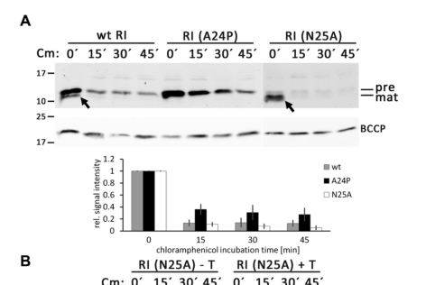

TODO: Add description for P13304
| GO Term | Evidence | Action | Reason |
|---|---|---|---|
|
GO:0003677
DNA binding
|
IEA
GO_REF:0000043 |
PENDING |
Summary: TODO: Review this GOA annotation
|
|
GO:0031640
killing of cells of another organism
|
IEA
GO_REF:0000043 |
PENDING |
Summary: TODO: Review this GOA annotation
|
|
GO:0044229
host cell periplasmic space
|
IEA
GO_REF:0000044 |
PENDING |
Summary: TODO: Review this GOA annotation
|
|
GO:0140678
molecular function inhibitor activity
|
IEA
GO_REF:0000120 |
PENDING |
Summary: TODO: Review this GOA annotation
|
|
GO:0044229
host cell periplasmic space
|
EXP
PMID:34456892 The Phage T4 Antiholin RI Has a Cleavable Signal Peptide, No... |
PENDING |
Summary: TODO: Review this GOA annotation
|
|
GO:0020002
host cell plasma membrane
|
IDA
PMID:17693511 The T4 RI antiholin has an N-terminal signal anchor release ... |
PENDING |
Summary: TODO: Review this GOA annotation
|
The research report should be a detailed narrative explaining the function, biological processes, and localization of the gene product. Citations should be given for all claims.
You should prioritize authoritative reviews and primary scientific literature when conducting research. You can supplement
this with annotations you find in gene/protein databases, but these can be outdated or inaccurate.
We are specifically interested in the primary function of the gene - for enzymes, what reaction is catalyzed, and what is the substrate specificity? For transporters, what is the substrate? For structural proteins or adapters, what is the broader structural role? For signaling molecules, what is the role in the pathway.
We are interested in where in or outside the cell the gene product carries out its function.
We are also interested in the signaling or biochemical pathways in which the gene functions. We are less interested in broad pleiotropic effects, except where these elucidate the precise role.
Include evidence where possible. We are interested in both experimental evidence as well as inference from structure, evolution, or bioinformatic analysis. Precise studies should be prioritized over high-throughput, where available.
The literature retrieved here consistently uses T4 gene rI to refer to the gene encoding RI, a small antiholin protein that antagonizes the T holin (gene t/rV) and is required for lysis inhibition (LIN) in Enterobacteria phage T4 infections (ramanculov2001anancientplayer pages 1-3, ramanculov2001anancientplayer pages 3-4, paddison1998therolesof pages 5-6). This matches the UniProt target context provided (P13304; “Antiholin / protein rI”).
In canonical double-stranded DNA phage lysis, a holin accumulates in the host inner membrane and, at a genetically programmed time, triggers to form lesions/pores that allow an endolysin to access and degrade peptidoglycan. In phage T4, holin triggering is controlled by antiholins including RI (periplasmic) which directly antagonize holin activity (moussa2014geneticdissectionof pages 1-2, chen2016thelastr pages 2-2).
Antiholin (definition in this T4 context): a phage-encoded regulator that binds holin (or its functional domains) and prevents pore formation/triggering until appropriate cues shift the system toward lysis (chen2016thelastr pages 2-2, moussa2014geneticdissectionof pages 1-2).
LIN is a T-even-phage strategy in which host-cell lysis is delayed in response to secondary adsorption/superinfection, enabling prolonged intracellular phage production and altered plaque morphology/biology (paddison1998therolesof pages 5-6, moussa2014geneticdissectionof pages 1-2). In T4, LIN is mediated primarily by RI inhibiting T (ramanculov2001anancientplayer pages 3-4, tran2005periplasmicdomainsdefine pages 6-7).
Genetic and biochemical analyses describe RI as a small protein; a frequently cited product is ~97 aa, ~11.1 kDa (pI ~4.8) (paddison1998therolesof pages 5-6). The soluble periplasmic region studied biochemically is ~75 aa and is ~9 kDa (moussa2012proteindeterminantsof pages 4-5).
A central feature of RI is that its functional domain is periplasmic, consistent with its inhibition of the periplasmic domain of holin T (tran2005periplasmicdomainsdefine pages 6-7, moussa2014geneticdissectionof pages 1-2). In domain-swap and chimera experiments, the periplasmic C-terminal domain of RI was necessary and sufficient for LIN (tran2005periplasmicdomainsdefine pages 6-7).
Primary function: RI is a T-holin inhibitor (antiholin) that binds the holin and prevents holin oligomerization/triggering, delaying membrane permeabilization and therefore delaying endolysin access to peptidoglycan (tran2005periplasmicdomainsdefine pages 6-7, moussa2014geneticdissectionof pages 1-2, schwarzkopf2024adimericholinantiholin pages 9-11).
Functional evidence:
* rI alone can impose LIN on T-mediated lysis in heterologous/plasmid settings (ramanculov2001anancientplayer pages 1-3).
* During LIN, T continues to accumulate in the membrane, indicating RI blocks function, not holin synthesis/localization (ramanculov2001anancientplayer pages 3-4).
* Formaldehyde crosslinking supports direct T–RI complex formation (appearance of ~38 kDa complex consistent with T+RI) (ramanculov2001anancientplayer pages 3-4).
LIN is physiologically reversible by conditions that collapse membrane energy:
* Inhibition can be relieved by cyanide (KCN) or forced lysis by chloroform, consistent with RI blocking holin function rather than permanently disabling the lytic machinery (ramanculov2001anancientplayer pages 3-4).
* Artificial depolarization by energy poisons can induce immediate premature lysis in T4 systems, overriding the inhibited state (moussa2014geneticdissectionof pages 1-2).
Multiple lines of work address RI–T oligomeric organization.
Biochemical solution studies (2012): mixing purified soluble domains shows an equimolar RI:T interaction; analytical ultracentrifugation supports a predominant 1:1 heterodimer (predicted ~29.7–30 kDa), even though gel filtration can show a larger apparent mass (~45.6 kDa), likely reflecting shape/oligomer mixtures (moussa2012proteindeterminantsof pages 4-5).
Structural model (2020): crystallography and cryo-EM of soluble domains support an sRI2–sT2 heterotetramer, and free sRI can form a homotetramer at high concentration; oligomeric state is concentration dependent (monomer/dimer at ≤1.6 mg/mL; tetramer at crystallization concentrations) (krieger2020thestructuralbasis pages 6-8, krieger2020thestructuralbasis pages 3-5). This work proposed a domain-swapping / conformational-change model for irreversibility of triggering and suggested a role for DNA/nucleotide binding as a LIN signal (krieger2020thestructuralbasis pages 8-9, krieger2020thestructuralbasis pages 14-16).
Recent reinterpretation (2024): Schwarzkopf et al. reconstituted LIN with only RI, holin T, and endolysin, and used mutagenesis plus AlphaFold-guided interface analysis to argue that the physiologically relevant inhibited form is a membrane-compatible T/RI dimer using a single conserved interface (“interface 1”), rather than requiring the full crystallographic tetramer arrangement (schwarzkopf2024adimericholinantiholin pages 1-2, schwarzkopf2024adimericholinantiholin pages 9-11).
Overall, current evidence supports that direct RI–T binding is the key molecular event; the dominant functional inhibitory unit is now argued to be dimeric in vivo (schwarzkopf2024adimericholinantiholin pages 9-11, schwarzkopf2024adimericholinantiholin pages 1-2), while larger oligomers/tetramers can occur for soluble domains under certain conditions (krieger2020thestructuralbasis pages 3-5).
In the 2024 reconstituted system, mutations at the inferred T/RI interaction interface (e.g., RI Y42A/Y42L/F56A) abolished LIN, supporting the functional importance of that specific binding surface (schwarzkopf2024adimericholinantiholin pages 3-5).
RI and the periplasmic domain of holin T contain disulfides important for function (e.g., RI Cys69–Cys75; T Cys175–Cys207) (moussa2012proteindeterminantsof pages 5-7, krieger2020thestructuralbasis pages 3-5). This is consistent with a periplasmic environment and indicates folding/oxidative pathways (e.g., Dsb system) can be relevant for functional interaction studies (moussa2012proteindeterminantsof pages 5-7).
A significant and recent revision concerns the N-terminus of RI.
Mehner-Breitfeld et al. (Aug 2021) combined signal-peptide prediction (SignalP), cleavage-site mutagenesis, fractionation, and reporter fusions to show RI has a cleavable Sec-type signal peptide with predicted cleavage after Ala24:
* Wild-type RI-HA was processed and found as mature protein in the periplasmic fraction (with fractionation controls showing minimal contamination).
* Mutation A24P at the cleavage region blocked processing (no mature RI detected).
* The RI signal peptide fused to PhoA was efficiently cleaved and exported, demonstrating a functional Sec signal peptide (mehnerbreitfeld2021thephaget4 pages 3-4, mehnerbreitfeld2021thephaget4 pages 1-2, mehnerbreitfeld2021thephaget4 pages 4-5).
Schwarzkopf et al. (Sep 2024) show that abolishing signal peptide cleavage (e.g., A24P) does not abolish LIN, and that membrane-anchored precursor RI can still function as an antiholin (schwarzkopf2024adimericholinantiholin pages 3-5, schwarzkopf2024adimericholinantiholin pages 1-2). Their data support a model where slow/inefficient cleavage is a regulatory feature and where holin binding can stabilize RI (schwarzkopf2024adimericholinantiholin pages 8-9).
Visual evidence supporting these conclusions is available from the 2024 paper’s figures (schwarzkopf2024adimericholinantiholin media 19864828, schwarzkopf2024adimericholinantiholin media c8129fc5).
Mechanistically, T4 lysis timing can be viewed as an accumulation-and-trigger threshold process for holin T. RI modulates this by binding T and preventing triggering, effectively increasing the time required for functional holin assemblies to form (moussa2014geneticdissectionof pages 1-2, schwarzkopf2024adimericholinantiholin pages 9-11).
Quantitative support from infection measurements:
* In one dataset, under LIN conditions ~8000 T molecules accumulate by 60 min; by contrast, in a LIN-defective T4 rI infection, lysis occurred at ~30 min when ~4000 T molecules were present—interpreted as a critical triggering concentration (moussa2012proteindeterminantsof pages 5-7).
Krieger et al. (2020) propose that the inhibited RI–T complex could be stabilized by non-sequence-specific binding to nucleic acids or nucleotide-like ligands, linking superinfection-derived DNA (or degradation products) to LIN. They report binding/shift assays where the sRI–sT complex (but not sRI alone) shifts DNAs (e.g., ss 70 bp; ds 30/58 bp) and binds nucleosides/nucleotides with micromolar affinities (e.g., guanosine Kd 43 µM; AMP 72.4 µM; ADP 213.6 µM; PRPP 225.9 µM) (krieger2020thestructuralbasis pages 6-8).
The 2024 reinterpretation does not eliminate a stabilizing role for periplasmic DNA, but it emphasizes that inhibition must be compatible with a membrane-anchored dimeric complex (schwarzkopf2024adimericholinantiholin pages 9-11).
Schwarzkopf et al. (Sep 2024) provided a key advance by reconstituting LIN in a phage-free system with only three components (RI, T, endolysin). This allowed targeted mutagenesis to test whether signal peptide cleavage and specific interaction surfaces are required, supporting a dimeric inhibitory model and clarifying that membrane anchoring can be compatible with inhibition (schwarzkopf2024adimericholinantiholin pages 1-2, schwarzkopf2024adimericholinantiholin pages 9-11).
Hvid & Mitarai (May 2024) used batch-culture ODE models and spatial plaque simulations to analyze why LIN is adaptive. Key quantitative predictions include:
* In spatial simulations, LIN phages yield a smaller visible plaque radius (~85–86% of rapid-lysis mutants) but a nearly comparable zone of infection radius (~96%), explaining why LIN can appear disadvantageous by plaque size yet spread similarly (hvid2024competitiveadvantagesof pages 12-15).
* In competition models, LIN can win even when burst size does not increase (fβ = 1) if LIN latency is sufficiently longer, because LIN-state cells can adsorb/inactivate competitor phages (hvid2024competitiveadvantagesof pages 9-12).
This provides an expert, quantitatively grounded framework for interpreting the biological role of RI-mediated LIN beyond molecular mechanism (hvid2024competitiveadvantagesof pages 9-12, hvid2024competitiveadvantagesof pages 12-15).
Although RI itself is a T4 protein, its mechanism informs broader engineered and applied contexts.
A 2023 experimental study in Yersinia entomophaga shows that a phage-like lysis cassette (holin/endolysin/spanin-like module) can be used by bacteria to mediate exoprotein release (including large complexes), supporting the concept of phage-derived lysis modules as secretion systems. Mutation of the cassette abolished exoprotein release and complementation restored it; engineered expression of an optimized cassette caused lysis; and holin translation occurred in a subpopulation, consistent with regulated timing/triggering concepts analogous to holin–antiholin control (schoof2023lysiscassettemediatedexoprotein pages 1-2).
A 2024 study (BSPM4 phage) identified orf52 as a phage gene whose expression was lethal to Salmonella and that modulates holin function to fine-tune lysis timing, providing replication advantages under high phage density—conceptually similar to RI-mediated modulation of holin triggering (kim2024elucidationofmolecular pages 1-2).
A 2025 perspective on synthetic cells for phage therapy reports that premature holin-mediated lysis in encapsulated TXTL systems likely caused a “dramatic loss of vesicles after 12 hours,” preventing phage production in compartments even when bulk TXTL produced phages. The authors argue that programmable lysis mechanisms—potentially using holins—will be needed to synchronize assembly and release, highlighting holin regulation (and thus antiholin principles) as enabling technology (kulkarni2025syntheticcellsfor pages 2-3).
The following table summarizes key supported claims, quantitative findings, and primary sources.
| Claim / feature | Evidence type | Key quantitative data | Primary source with year and URL |
|---|---|---|---|
| Gene identity and primary function: T4 rI encodes RI, a t-specific antiholin that inhibits holin T and imposes lysis inhibition (LIN) | Genetics, functional complementation, cross-linking | Plasmid-borne rI alone can impose LIN on T-mediated lysis; LIN-defective rI57 fails to block lysis; cross-linked T–RI species at ~38 kDa | Ramanculov & Young 2001, Molecular Microbiology, https://doi.org/10.1046/j.1365-2958.2001.02491.x (ramanculov2001anancientplayer pages 1-3, ramanculov2001anancientplayer pages 3-4) |
| Protein size / gene product: RI is a small acidic protein with a short N-terminal export segment and periplasmic C-terminal domain | Genetics, sequence analysis, biochemistry | Reported as 97 aa, ~11.1 kDa, pI 4.8; soluble periplasmic domain sRI ~75 aa, ~8.8–9.7 kDa | Paddison et al. 1998, Genetics, https://doi.org/10.1093/genetics/148.4.1539; Moussa et al. 2012, Protein Science, https://doi.org/10.1002/pro.2042 (paddison1998therolesof pages 5-6, moussa2012proteindeterminantsof pages 1-3, moussa2012proteindeterminantsof pages 4-5) |
| Localization: RI acts through its periplasmic domain; the C-terminal periplasmic region is necessary and sufficient for LIN | Genetics, domain swaps, fractionation | ssPhoA-RICTD chimera is processed, periplasmic, and functionally supports LIN; periplasmic TCTD can block/subvert LIN | Tran et al. 2005, Journal of Bacteriology, https://doi.org/10.1128/jb.187.19.6631-6640.2005 (tran2005periplasmicdomainsdefine pages 6-7) |
| Signal peptide processing: RI has a cleavable Sec signal peptide, not a classical SAR domain, in the 2021 revision | Bioinformatics, mutagenesis, fractionation, reporter fusion | SignalP predicted cleavage after Ala24 (~95% probability); A24P blocks processing; RI signal peptide exports PhoA efficiently | Mehner-Breitfeld et al. 2021, Frontiers in Microbiology, https://doi.org/10.3389/fmicb.2021.712460 (mehnerbreitfeld2021thephaget4 pages 2-3, mehnerbreitfeld2021thephaget4 pages 1-2, mehnerbreitfeld2021thephaget4 pages 3-4) |
| Membrane-anchored RI can still inhibit holin: cleavage is not required for LIN in a reconstituted system | Reconstitution, mutagenesis, fractionation | A24P abolished detectable processing yet preserved LIN; RI(A24P) remained membrane-localized | Schwarzkopf et al. 2024, Frontiers in Microbiology, https://doi.org/10.3389/fmicb.2024.1419106 (schwarzkopf2024adimericholinantiholin pages 3-5, schwarzkopf2024adimericholinantiholin pages 1-2, schwarzkopf2024adimericholinantiholin pages 8-9) |
| Interaction partner: RI binds the periplasmic C-terminal domain of holin T rather than affecting T synthesis | Genetics, biochemistry, cross-linking | T continues to accumulate in inner membrane during LIN; excess periplasmic TCTD antagonizes LIN | Ramanculov & Young 2001, Molecular Microbiology, https://doi.org/10.1046/j.1365-2958.2001.02491.x; Tran et al. 2005, Journal of Bacteriology, https://doi.org/10.1128/jb.187.19.6631-6640.2005 (ramanculov2001anancientplayer pages 3-4, tran2005periplasmicdomainsdefine pages 6-7) |
| Stoichiometry / oligomeric state (biochemical view): predominant soluble complex is a 1:1 RI:T heterodimer | Biochemistry, SEC, analytical ultracentrifugation | SEC apparent mass ~45.6 kDa, but sedimentation supports a heterodimer near predicted 29.7–30 kDa; sRI monomer ~9.2 kDa, 1.4S; complex 4.1S | Moussa et al. 2012, Protein Science, https://doi.org/10.1002/pro.2042 (moussa2012proteindeterminantsof pages 1-3, moussa2012proteindeterminantsof pages 4-5) |
| Stoichiometry / oligomeric state (structural 2020 model): soluble domains can form sRI2–sT2 heterotetramers and RI homotetramers at high concentration | X-ray crystallography, cryo-EM, solution biophysics | RI tetramer at 10 mg/mL; PDBePISA buried area ~8618.8 Ų, ΔGint ~−87 kcal/mol, ΔGdiss ~13.8 kcal/mol; cryo-EM map ~9.4 Å | Krieger et al. 2020, Journal of Molecular Biology, https://doi.org/10.1016/j.jmb.2020.06.013 (krieger2020thestructuralbasis pages 6-8, krieger2020thestructuralbasis pages 3-5, krieger2020thestructuralbasis pages 14-16) |
| Current mechanistic interpretation (2024): physiologically relevant inhibitory species is likely a dimeric T/RI complex, not the full tetramer seen in crystals | Reconstitution, mutagenesis, AlphaFold-guided analysis | Only one conserved interface is required; mutations Y42A, Y42L, F56A abolish LIN | Schwarzkopf et al. 2024, Frontiers in Microbiology, https://doi.org/10.3389/fmicb.2024.1419106 (schwarzkopf2024adimericholinantiholin pages 3-5, schwarzkopf2024adimericholinantiholin pages 9-11, schwarzkopf2024adimericholinantiholin pages 1-2) |
| Mechanism of inhibition: RI prevents holin oligomerization / triggering, thereby delaying endolysin release and host lysis | Genetics, biochemistry, structural inference | Holin triggering in T4rI occurs around ~4000 T molecules; under LIN ~8000 T molecules accumulate by 60 min | Moussa et al. 2012, Protein Science, https://doi.org/10.1002/pro.2042; Moussa et al. 2014, Journal of Bacteriology, https://doi.org/10.1128/jb.01548-14 (moussa2012proteindeterminantsof pages 5-7, moussa2014geneticdissectionof pages 1-2) |
| Reversibility / triggering: LIN can be reversed by membrane depolarization or energy poisons, indicating RI blocks T function rather than endolysin availability | Genetics, physiological assays | KCN relieves RI block; CHCl3 causes immediate lysis; energy poisons override LIN | Ramanculov & Young 2001, Molecular Microbiology, https://doi.org/10.1046/j.1365-2958.2001.02491.x; Tran et al. 2005, Journal of Bacteriology, https://doi.org/10.1128/jb.187.19.6631-6640.2005; Moussa et al. 2014, Journal of Bacteriology, https://doi.org/10.1128/jb.01548-14 (ramanculov2001anancientplayer pages 3-4, tran2005periplasmicdomainsdefine pages 6-7, moussa2014geneticdissectionof pages 1-2) |
| Disulfide-stabilized periplasmic fold: RI and T require Cys pairs for proper folded interaction | Biochemistry | RI disulfide Cys69–Cys75; T disulfide Cys175–Cys207; no free thiols detected in purified proteins/complex | Moussa et al. 2012, Protein Science, https://doi.org/10.1002/pro.2042; Krieger et al. 2020, Journal of Molecular Biology, https://doi.org/10.1016/j.jmb.2020.06.013 (moussa2012proteindeterminantsof pages 5-7, krieger2020thestructuralbasis pages 3-5) |
| Lysis timing / ecological effect: superinfection-triggered LIN can greatly increase progeny yield and be sustained by repeated superinfection | Infection kinetics, modeling | Repeated superinfection at <10 min intervals can sustain inhibition; intracellular virions can increase by about 10-fold; modeled visible plaque radius ~85–86% of rapid-lysis mutant, infection-zone radius ~96% | Moussa et al. 2012, Protein Science, https://doi.org/10.1002/pro.2042; Hvid & Mitarai 2024, PLOS Computational Biology, https://doi.org/10.1101/2024.02.07.579269 (moussa2012proteindeterminantsof pages 1-3, hvid2024competitiveadvantagesof pages 9-12, hvid2024competitiveadvantagesof pages 12-15) |
| DNA-binding signal model (2020 structural proposal): sRI–sT complex may bind superinfection-derived nucleic acids non-specifically to stabilize LIN | Structure, binding assays, modeling | Reported ligand affinities: guanosine Kd 43 µM, AMP 72.4 µM, ADP 213.6 µM, PRPP 225.9 µM; DNA shifts with ss 70 bp, ds 30/58 bp tested | Krieger et al. 2020, Journal of Molecular Biology, https://doi.org/10.1016/j.jmb.2020.06.013 (krieger2020thestructuralbasis pages 6-8, krieger2020thestructuralbasis pages 14-16) |
| Status of DNA-binding model after 2024 work: DNA may still stabilize complexes, but the key inhibitory unit is now argued to be membrane-compatible T/RI dimer | Structure-informed functional reinterpretation | No new Kd reported in 2024; emphasis shifted from tetramer to membrane-anchored dimer/interface-1 model | Schwarzkopf et al. 2024, Frontiers in Microbiology, https://doi.org/10.3389/fmicb.2024.1419106 (schwarzkopf2024adimericholinantiholin pages 9-11, schwarzkopf2024adimericholinantiholin pages 1-2) |
Table: This table compiles the main experimentally supported features of bacteriophage T4 rI/RI, including identity, localization, mechanism, stoichiometry, and lysis-control phenotypes. It is designed as a compact evidence map for the final research report, with quantitative findings and primary-source URLs.
References
(ramanculov2001anancientplayer pages 1-3): Erlan Ramanculov and Ry Young. An ancient player unmasked: t4 ri encodes a t‐specific antiholin. Molecular Microbiology, 41:575-583, Aug 2001. URL: https://doi.org/10.1046/j.1365-2958.2001.02491.x, doi:10.1046/j.1365-2958.2001.02491.x. This article has 76 citations and is from a domain leading peer-reviewed journal.
(ramanculov2001anancientplayer pages 3-4): Erlan Ramanculov and Ry Young. An ancient player unmasked: t4 ri encodes a t‐specific antiholin. Molecular Microbiology, 41:575-583, Aug 2001. URL: https://doi.org/10.1046/j.1365-2958.2001.02491.x, doi:10.1046/j.1365-2958.2001.02491.x. This article has 76 citations and is from a domain leading peer-reviewed journal.
(paddison1998therolesof pages 5-6): Patrick Paddison, Stephen T Abedon, Holly Kloos Dressman, Katherine Gailbreath, Julia Tracy, Eric Mosser, James Neitzel, Burton Guttman, and Elizabeth Kutter. The roles of the bacteriophage t4 r genes in lysis inhibition and fine-structure genetics: a new perspective. Genetics, 148:1539-1550, Apr 1998. URL: https://doi.org/10.1093/genetics/148.4.1539, doi:10.1093/genetics/148.4.1539. This article has 125 citations and is from a domain leading peer-reviewed journal.
(moussa2014geneticdissectionof pages 1-2): Samir H. Moussa, Jessica L. Lawler, and Ry Young. Genetic dissection of t4 lysis. Journal of Bacteriology, 196:2201-2209, Jun 2014. URL: https://doi.org/10.1128/jb.01548-14, doi:10.1128/jb.01548-14. This article has 22 citations and is from a peer-reviewed journal.
(chen2016thelastr pages 2-2): Yi Chen and Ry Young. The last r locus unveiled: t4 riii is a cytoplasmic antiholin. Journal of Bacteriology, 198:2448-2457, Sep 2016. URL: https://doi.org/10.1128/jb.00294-16, doi:10.1128/jb.00294-16. This article has 28 citations and is from a peer-reviewed journal.
(tran2005periplasmicdomainsdefine pages 6-7): Tram Anh T. Tran, Douglas K. Struck, and Ry Young. Periplasmic domains define holin-antiholin interactions in t4 lysis inhibition. Journal of Bacteriology, 187:6631-6640, Oct 2005. URL: https://doi.org/10.1128/jb.187.19.6631-6640.2005, doi:10.1128/jb.187.19.6631-6640.2005. This article has 98 citations and is from a peer-reviewed journal.
(moussa2012proteindeterminantsof pages 4-5): Samir H. Moussa, Vladimir Kuznetsov, Tram Anh T. Tran, James C. Sacchettini, and Ry Young. Protein determinants of phage t4 lysis inhibition. Protein Science, 21:571-582, Apr 2012. URL: https://doi.org/10.1002/pro.2042, doi:10.1002/pro.2042. This article has 55 citations and is from a peer-reviewed journal.
(schwarzkopf2024adimericholinantiholin pages 9-11): Jan Michel Frederik Schwarzkopf, Denise Mehner-Breitfeld, and Thomas Brüser. A dimeric holin/antiholin complex controls lysis by phage t4. Frontiers in Microbiology, Sep 2024. URL: https://doi.org/10.3389/fmicb.2024.1419106, doi:10.3389/fmicb.2024.1419106. This article has 12 citations and is from a peer-reviewed journal.
(krieger2020thestructuralbasis pages 6-8): Inna V. Krieger, Vladimir Kuznetsov, Jeng-Yih Chang, Junjie Zhang, Samir H. Moussa, Ryland F. Young, and James C. Sacchettini. The structural basis of t4 phage lysis control: dna as the signal for lysis inhibition. Jul 2020. URL: https://doi.org/10.1016/j.jmb.2020.06.013, doi:10.1016/j.jmb.2020.06.013. This article has 35 citations and is from a domain leading peer-reviewed journal.
(krieger2020thestructuralbasis pages 3-5): Inna V. Krieger, Vladimir Kuznetsov, Jeng-Yih Chang, Junjie Zhang, Samir H. Moussa, Ryland F. Young, and James C. Sacchettini. The structural basis of t4 phage lysis control: dna as the signal for lysis inhibition. Jul 2020. URL: https://doi.org/10.1016/j.jmb.2020.06.013, doi:10.1016/j.jmb.2020.06.013. This article has 35 citations and is from a domain leading peer-reviewed journal.
(krieger2020thestructuralbasis pages 8-9): Inna V. Krieger, Vladimir Kuznetsov, Jeng-Yih Chang, Junjie Zhang, Samir H. Moussa, Ryland F. Young, and James C. Sacchettini. The structural basis of t4 phage lysis control: dna as the signal for lysis inhibition. Jul 2020. URL: https://doi.org/10.1016/j.jmb.2020.06.013, doi:10.1016/j.jmb.2020.06.013. This article has 35 citations and is from a domain leading peer-reviewed journal.
(krieger2020thestructuralbasis pages 14-16): Inna V. Krieger, Vladimir Kuznetsov, Jeng-Yih Chang, Junjie Zhang, Samir H. Moussa, Ryland F. Young, and James C. Sacchettini. The structural basis of t4 phage lysis control: dna as the signal for lysis inhibition. Jul 2020. URL: https://doi.org/10.1016/j.jmb.2020.06.013, doi:10.1016/j.jmb.2020.06.013. This article has 35 citations and is from a domain leading peer-reviewed journal.
(schwarzkopf2024adimericholinantiholin pages 1-2): Jan Michel Frederik Schwarzkopf, Denise Mehner-Breitfeld, and Thomas Brüser. A dimeric holin/antiholin complex controls lysis by phage t4. Frontiers in Microbiology, Sep 2024. URL: https://doi.org/10.3389/fmicb.2024.1419106, doi:10.3389/fmicb.2024.1419106. This article has 12 citations and is from a peer-reviewed journal.
(schwarzkopf2024adimericholinantiholin pages 3-5): Jan Michel Frederik Schwarzkopf, Denise Mehner-Breitfeld, and Thomas Brüser. A dimeric holin/antiholin complex controls lysis by phage t4. Frontiers in Microbiology, Sep 2024. URL: https://doi.org/10.3389/fmicb.2024.1419106, doi:10.3389/fmicb.2024.1419106. This article has 12 citations and is from a peer-reviewed journal.
(moussa2012proteindeterminantsof pages 5-7): Samir H. Moussa, Vladimir Kuznetsov, Tram Anh T. Tran, James C. Sacchettini, and Ry Young. Protein determinants of phage t4 lysis inhibition. Protein Science, 21:571-582, Apr 2012. URL: https://doi.org/10.1002/pro.2042, doi:10.1002/pro.2042. This article has 55 citations and is from a peer-reviewed journal.
(mehnerbreitfeld2021thephaget4 pages 3-4): Denise Mehner-Breitfeld, Jan Michel Frederik Schwarzkopf, Ry Young, Kiran Kondabagil, and Thomas Brüser. The phage t4 antiholin ri has a cleavable signal peptide, not a sar domain. Frontiers in Microbiology, Aug 2021. URL: https://doi.org/10.3389/fmicb.2021.712460, doi:10.3389/fmicb.2021.712460. This article has 13 citations and is from a peer-reviewed journal.
(mehnerbreitfeld2021thephaget4 pages 1-2): Denise Mehner-Breitfeld, Jan Michel Frederik Schwarzkopf, Ry Young, Kiran Kondabagil, and Thomas Brüser. The phage t4 antiholin ri has a cleavable signal peptide, not a sar domain. Frontiers in Microbiology, Aug 2021. URL: https://doi.org/10.3389/fmicb.2021.712460, doi:10.3389/fmicb.2021.712460. This article has 13 citations and is from a peer-reviewed journal.
(mehnerbreitfeld2021thephaget4 pages 4-5): Denise Mehner-Breitfeld, Jan Michel Frederik Schwarzkopf, Ry Young, Kiran Kondabagil, and Thomas Brüser. The phage t4 antiholin ri has a cleavable signal peptide, not a sar domain. Frontiers in Microbiology, Aug 2021. URL: https://doi.org/10.3389/fmicb.2021.712460, doi:10.3389/fmicb.2021.712460. This article has 13 citations and is from a peer-reviewed journal.
(schwarzkopf2024adimericholinantiholin pages 8-9): Jan Michel Frederik Schwarzkopf, Denise Mehner-Breitfeld, and Thomas Brüser. A dimeric holin/antiholin complex controls lysis by phage t4. Frontiers in Microbiology, Sep 2024. URL: https://doi.org/10.3389/fmicb.2024.1419106, doi:10.3389/fmicb.2024.1419106. This article has 12 citations and is from a peer-reviewed journal.
(schwarzkopf2024adimericholinantiholin media 19864828): Jan Michel Frederik Schwarzkopf, Denise Mehner-Breitfeld, and Thomas Brüser. A dimeric holin/antiholin complex controls lysis by phage t4. Frontiers in Microbiology, Sep 2024. URL: https://doi.org/10.3389/fmicb.2024.1419106, doi:10.3389/fmicb.2024.1419106. This article has 12 citations and is from a peer-reviewed journal.
(schwarzkopf2024adimericholinantiholin media c8129fc5): Jan Michel Frederik Schwarzkopf, Denise Mehner-Breitfeld, and Thomas Brüser. A dimeric holin/antiholin complex controls lysis by phage t4. Frontiers in Microbiology, Sep 2024. URL: https://doi.org/10.3389/fmicb.2024.1419106, doi:10.3389/fmicb.2024.1419106. This article has 12 citations and is from a peer-reviewed journal.
(hvid2024competitiveadvantagesof pages 12-15): Ulrik Hvid and Namiko Mitarai. Competitive advantages of t-even phage lysis inhibition in response to secondary infection. PLOS Computational Biology, May 2024. URL: https://doi.org/10.1101/2024.02.07.579269, doi:10.1101/2024.02.07.579269. This article has 8 citations and is from a highest quality peer-reviewed journal.
(hvid2024competitiveadvantagesof pages 9-12): Ulrik Hvid and Namiko Mitarai. Competitive advantages of t-even phage lysis inhibition in response to secondary infection. PLOS Computational Biology, May 2024. URL: https://doi.org/10.1101/2024.02.07.579269, doi:10.1101/2024.02.07.579269. This article has 8 citations and is from a highest quality peer-reviewed journal.
(schoof2023lysiscassettemediatedexoprotein pages 1-2): Marion Schoof, Maureen O’Callaghan, Charles Hefer, Travis R. Glare, Amber R. Paulson, and Mark R. H. Hurst. Lysis cassette-mediated exoprotein release in yersinia entomophaga is controlled by a phob-like regulator. Microbiology Spectrum, Apr 2023. URL: https://doi.org/10.1128/spectrum.00364-23, doi:10.1128/spectrum.00364-23. This article has 7 citations and is from a domain leading peer-reviewed journal.
(kim2024elucidationofmolecular pages 1-2): Jinwoo Kim, Joonbeom Kim, and Sangryeol Ryu. Elucidation of molecular function of phage protein responsible for optimization of host cell lysis. BMC Microbiology, Dec 2024. URL: https://doi.org/10.1186/s12866-024-03684-9, doi:10.1186/s12866-024-03684-9. This article has 6 citations and is from a peer-reviewed journal.
(kulkarni2025syntheticcellsfor pages 2-3): Vishwesh Kulkarni, Nadanai Laohakunakorn, and Sahan B. W. Liyanagedera. Synthetic cells for phage therapy: a perspective. Frontiers in Cellular and Infection Microbiology, Oct 2025. URL: https://doi.org/10.3389/fcimb.2025.1690404, doi:10.3389/fcimb.2025.1690404. This article has 0 citations.
(moussa2012proteindeterminantsof pages 1-3): Samir H. Moussa, Vladimir Kuznetsov, Tram Anh T. Tran, James C. Sacchettini, and Ry Young. Protein determinants of phage t4 lysis inhibition. Protein Science, 21:571-582, Apr 2012. URL: https://doi.org/10.1002/pro.2042, doi:10.1002/pro.2042. This article has 55 citations and is from a peer-reviewed journal.
(mehnerbreitfeld2021thephaget4 pages 2-3): Denise Mehner-Breitfeld, Jan Michel Frederik Schwarzkopf, Ry Young, Kiran Kondabagil, and Thomas Brüser. The phage t4 antiholin ri has a cleavable signal peptide, not a sar domain. Frontiers in Microbiology, Aug 2021. URL: https://doi.org/10.3389/fmicb.2021.712460, doi:10.3389/fmicb.2021.712460. This article has 13 citations and is from a peer-reviewed journal.
(hvid2024competitiveadvantagesof pages 1-4): Ulrik Hvid and Namiko Mitarai. Competitive advantages of t-even phage lysis inhibition in response to secondary infection. PLOS Computational Biology, May 2024. URL: https://doi.org/10.1101/2024.02.07.579269, doi:10.1101/2024.02.07.579269. This article has 8 citations and is from a highest quality peer-reviewed journal.

id: P13304
gene_symbol: P13304
product_type: PROTEIN
status: INITIALIZED
taxon:
id: NCBITaxon:10665
label: Enterobacteria phage T4
description: 'TODO: Add description for P13304'
existing_annotations:
- term:
id: GO:0003677
label: DNA binding
evidence_type: IEA
original_reference_id: GO_REF:0000043
review:
summary: 'TODO: Review this GOA annotation'
action: PENDING
- term:
id: GO:0031640
label: killing of cells of another organism
evidence_type: IEA
original_reference_id: GO_REF:0000043
review:
summary: 'TODO: Review this GOA annotation'
action: PENDING
- term:
id: GO:0044229
label: host cell periplasmic space
evidence_type: IEA
original_reference_id: GO_REF:0000044
review:
summary: 'TODO: Review this GOA annotation'
action: PENDING
- term:
id: GO:0140678
label: molecular function inhibitor activity
evidence_type: IEA
original_reference_id: GO_REF:0000120
review:
summary: 'TODO: Review this GOA annotation'
action: PENDING
- term:
id: GO:0044229
label: host cell periplasmic space
evidence_type: EXP
original_reference_id: PMID:34456892
review:
summary: 'TODO: Review this GOA annotation'
action: PENDING
- term:
id: GO:0020002
label: host cell plasma membrane
evidence_type: IDA
original_reference_id: PMID:17693511
review:
summary: 'TODO: Review this GOA annotation'
action: PENDING
references:
- id: GO_REF:0000043
title: Gene Ontology annotation based on UniProtKB/Swiss-Prot keyword mapping
findings: []
- id: GO_REF:0000044
title: Gene Ontology annotation based on UniProtKB/Swiss-Prot Subcellular Location
vocabulary mapping, accompanied by conservative changes to GO terms applied by
UniProt
findings: []
- id: GO_REF:0000120
title: Combined Automated Annotation using Multiple IEA Methods
findings: []
- id: PMID:17693511
title: The T4 RI antiholin has an N-terminal signal anchor release domain that targets
it for degradation by DegP.
findings: []
- id: PMID:34456892
title: The Phage T4 Antiholin RI Has a Cleavable Signal Peptide, Not a SAR Domain.
findings: []
{kind=link}